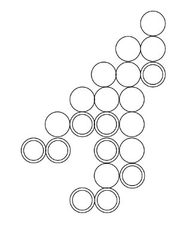

Order theory traditionally studies combinatorial properties of partially ordered sets. Using operad theory, I study objects that share endomorphisms with posets. Since this is reasearch at the basis of mathematics, my results propagate to number theory, dendroidal homotopy theory and machine learning (so far).
From the point of view of operad theory: In the paper ``An algebra ...'' we define the action of the operad of series parallel posets on a family of power series and on order polytopes.
In the paper ``A poset version ...'' we extended the action of the operad of series parallel posets on power series, to an action of the operad of finite posets. We then introduced an action of the operad of finite posets to sets related to zeta values.
In "Shuffle series" we apply the theory developed to solve a problem related to the tensor product of operads.
In "Order theory in ..." we prove that posets and order polytopes are isomorphic as algebras over the operad of posets, and we define a set of neural networks that are an algebra over the operad of posets.
Papers
An algebra over the operad of posets and structural binomial identities publication link,arxiv link, with Jose Antonio Arciniega-Nevarez and Marko Berghoff. Boletín de la Sociedad Matemática Mexicana.
In this paper we study series parallel posets as an algebra over an operad of posets. In our theory, the associativity of concatenation introduces new identities of binomial coefficients.
Polychrony as Chinampas. publication link, arxiv link, with Jose Antonio Arciniega-Nevarez, Anh Nguyen, Yitong Zou, Luke Van Popering, Nathan Crock, Gordon Erlebacher and Jose L. Mendoza-Cortes. Algorithms.
In this paper we study signal-flow graphs with a nonlinear condition on the vertices.

Put double rings on some integer lattice points in the first quadrant of the cartesian plane. From bottom to top, left to right, if coordinate (x,y) and (x,y+1) are have any circles, then put a simple circle on (x+1,y+1). What you obtain is a chinampa. To count certain polycrhony groups we introduce the theory of chinampas and study their enumeration problem.
I'm coauthor of "Growth of (Re, Pb)-Ca-Ba-Cu-Ag-O Precursor films by spray Pyrolysis Technique", published at the Symposium Solar Cells \& Solar Energy Materials, XIV International Materials Research Congress 2005, Abstracts Book p. 32.
"Order Theory in the Context of Machine Learning: an application" link. We conect order theory with ML, discovering new pooling filters that sometimes outperform max pooling, average pooling, and mix pooling.
Shuffle series link, with Khushdil Ahmad and Khurram Shabbir.
We apply the theory of algebras over the operad of posets to solve a problem in enumerative combinatorics. The tensor product of operads can be understood in terms of shuffles of trees, and we explain how to count shuffles between an arbitrary tree and a linear tree. We show that under some conditions, every property of a poset induces three series.
Operad of posets 101 : The Wixarika posets link, with Jose Antonio Arciniega-Nevarez and Marko Berghoff.
An old version of these notes were used to give a minicourse in Govt. College University Lahore in Pakistan 2022, and at the BIRS-CMO workshop “6th meeting of the Mexican Mathematicians in the World” 2024.
A poset version of Ramanujan results on Eulerian numbers and zeta values link, with Jose L. Mendoza-Cortes.
Consider the decomposition of a cube into 6 pyramids. When we put them togeter, we double count 6 triangles, and when we remove those triangles, we had to return a line. This leads to an inclussion exclusion formula cube=6pyramids-6triangles+1line. From that formula we describe an identity among zeta values. We then show that this process: decomposition of polytopes-> identities with zeta values is true for order polytopes of posets. This is generalization of an identity by Ramanujan and our techniques compute new rational zeta series.
Convergence of Taylor Series of real normed division algebras. link.
In this paper we demonstrate how to extend the Cauchy-Hadamard theorem to quaternionic analysis; the methods allowed us to prove a couple of Abel's theorems about convergence of (hyperholomorphic) series and to find a bigger region of convergence than the standard sphere.
Consultation with the Department of Geography at FSU: Organized and hosted bimonthly meetings to discuss possible ML projects with geographical data.
I have spent time learning about; non-commutativity and analysis with Dr. Shapiro Fishman (R.I.P.), Homotopy and categories with Dr. Lupercio Lara, and Operads
with Dr. Dmitry Tamarkin. I am intrigued by the theory of Drinfeld associators, so I organized a seminar called “Associators, Formality and Invariants” where I talked about EK-quantization of Lie bi-algebras, Homotopy Gerstenhaber algebras and formality, among other topics. “Associators, Formality and Invariants” Seminar at Northwestern University.
Below are some notes from the seminar.
Notes from Dr. Licata's course : Braid group actions from representation theory).
My own notes on A infinity algebras.
My own notes on Genus-zero TQFTs and operads.